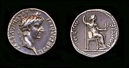

Just a moment...

Checking your browser before accessing time.rs.
tablePlease enable Cookies and reload the page.
This process is automatic. Your browser will redirect to your requested content shortly.
Please allow up to 5 seconds…
DDoS protection by CloudflareRay ID: 5d2837f339d32790